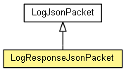

org.waarp.openr66.protocol.localhandler.packet.json
Class LogResponseJsonPacket
java.lang.Object
 org.waarp.openr66.protocol.localhandler.packet.json.JsonPacket
org.waarp.openr66.protocol.localhandler.packet.json.LogJsonPacket
org.waarp.openr66.protocol.localhandler.packet.json.LogResponseJsonPacket
org.waarp.openr66.protocol.localhandler.packet.json.JsonPacket
org.waarp.openr66.protocol.localhandler.packet.json.LogJsonPacket
org.waarp.openr66.protocol.localhandler.packet.json.LogResponseJsonPacket
public class LogResponseJsonPacket
- extends LogJsonPacket

- Author:
- "Frederic Bregier"
| Fields inherited from class org.waarp.openr66.protocol.localhandler.packet.json.LogJsonPacket |
clean, purge, request, rule, start, startid, statusdone, statuserror, statuspending, statustransfer, stop, stopid |
| Fields inherited from class org.waarp.openr66.protocol.localhandler.packet.json.JsonPacket |
handler |
| Methods inherited from class org.waarp.openr66.protocol.localhandler.packet.json.LogJsonPacket |
fromJson, getRequest, getRule, getStart, getStartid, getStop, getStopid, isClean, isPurge, isStatusdone, isStatuserror, isStatuspending, isStatustransfer, setClean, setPurge, setRequest, setRule, setStart, setStartid, setStatusdone, setStatuserror, setStatuspending, setStatustransfer, setStop, setStopid |
command
protected byte command
filename
protected String filename
exported
protected long exported
purged
protected long purged
LogResponseJsonPacket
public LogResponseJsonPacket()
getCommand
public byte getCommand()
- Returns:
- the command
setCommand
public void setCommand(byte command)
- Parameters:
command - the command to set
getFilename
public String getFilename()
- Returns:
- the filename
setFilename
public void setFilename(String filename)
- Parameters:
filename - the filename to set
getExported
public long getExported()
- Returns:
- the exported
setExported
public void setExported(long exported)
- Parameters:
exported - the exported to set
getPurged
public long getPurged()
- Returns:
- the purged
setPurged
public void setPurged(long purged)
- Parameters:
purged - the purged to set
Copyright © 2009-2013 Waarp. All Rights Reserved.